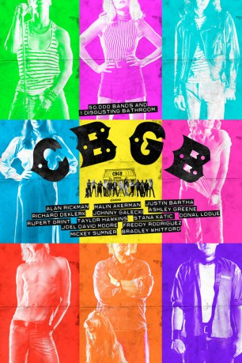

#8468 CBGB
 
 IMDB-Wertung: 6.6 / 10
IMDB-Wertung: 6.6 / 10  Tomatometer: 7
Tomatometer: 7  Metascore: 0
Metascore: 0 
Clubbesitzer Hilly Kristal ist alles andere als zufrieden mit den Geschäften. Mit seinem 1973 eröffneten Musik-Club "CBGB" (kurz für Country, Bluegrass und Blues) steckt er wenige Jahre später in einer tiefen Krise, als die Countrybands dort nicht mehr auftreten. Weil er seinen Traum nicht aufgeben will und weil er immer offen für Neues ist, öffnet Hilly auch anderen Musikern die Pforten seines Etablissements. Endlich beginnt die Kasse wieder zu klingeln und "CBGB" wird ironischerweise zu einem der Geburtsorte des Punk-Rock. Hier stehen Künstler wie Blondie, die Ramones oder auch The Police auf der Bühne, dazu noch Tausende weiterer Bands, von denen etliche nach einem Gig im "CBGB" ihren Durchbruch schaffen.
Jahr: 2013
Dauer: 102 Minuten
FSK:
Land: USA Studio: XLrator MediaTonspuren: DD2.0 - ,
Untertitel:
Auflösung: 1080p (1920x808) Größe: 7976 MB
Genre: Drama, Musik
Regisseur: Randall Miller
Drehbuch: Jody Savin
Soundtrack:
Darsteller:
 Alan Rickman als Hilly Kristal
Alan Rickman als Hilly Kristal Malin Akerman als Debbie Harry
Malin Akerman als Debbie Harry Justin Bartha als Stiv Bators
Justin Bartha als Stiv Bators- Richard de Klerk als Taxi
 Johnny Galecki als Terry Ork
Johnny Galecki als Terry Ork Kyle Gallner als Lou Reed
Kyle Gallner als Lou Reed Ashley Greene als Lisa Kristal
Ashley Greene als Lisa Kristal Rupert Grint als Cheetah Chrome
Rupert Grint als Cheetah Chrome Estelle Harris als Bertha Kristal
Estelle Harris als Bertha Kristal- Taylor Hawkins als Iggy Pop
 Ryan Hurst als Mad Mountain
Ryan Hurst als Mad Mountain- Stana Katic als Genya Ravan
 Joel David Moore als Joey Ramone
Joel David Moore als Joey Ramone- Ahna O'Reilly als Mary Harron
 Freddy Rodríguez als Idaho
Freddy Rodríguez als Idaho Mickey Sumner als Patti Smith
Mickey Sumner als Patti Smith Bradley Whitford als Nicky Gant
Bradley Whitford als Nicky Gant Josh Zuckerman als John Holmstrom
Josh Zuckerman als John Holmstrom- Julian Acosta als Johnny Ramone
 Dominic Bogart als Michael Sticca
Dominic Bogart als Michael Sticca- Arthur Bridgers als Shamai Kristal
- Jared Carter als David Byrne
- Evan Alex Cole als Richard Hell
- Katherine DuBois als Genya's Friend
- James Edwards als Psychotic Fan
- Darin Heames als Bert
- Holly Hubbell als Sarah Brown
- B. Todd Johnston als Benjamin Brown
- Bob Lipka als Ye Ol' Farmer
 Donal Logue als Merv Ferguson
Donal Logue als Merv Ferguson- Richard Marrero als Angry Hombre #2
 Michael Massee als Officer Stan
Michael Massee als Officer Stan- Keene McRae als Sting
- Aaron Munoz als Palace Hotel Manager
 Tom Nowicki als Palace Bartender
Tom Nowicki als Palace Bartender- Juan Piedrahita als Angry Hombre #1
- Steven Schub als Dee Dee Ramone
- Danielle Lily Shaw als Young Bertha
 Peter Vack als Legs McNeil
Peter Vack als Legs McNeil- Bronson Adams als Johnny Blitz
- Cheetah Chrome als Cabbie
- Kamille Dawkins als Bank Teller
- Teddy the Dog als Nathan the Dog
- Luke Dressler als Richard Lloyd
- Parker Gant als Baby Hilly
- Vincenzo Hinckley als Da Thug
- Abby Leigh Huffstetler als Tina Weymouth
- Caleb McCotter als Wayne County
- Max Reinhardsen als Tom Verlaine
- Blake Shutterly als Female Reporter
Datei: X:\2013(A-F)\CBGB (2013, FSK, 1920x808).mkv seit 06.03.2018
Festplatte: HD 2012(N-Z)-2013(A-H)
 Es gibt insgesamt 127 Filme in der Gruppe '2013(A-F)'
Es gibt insgesamt 127 Filme in der Gruppe '2013(A-F)'